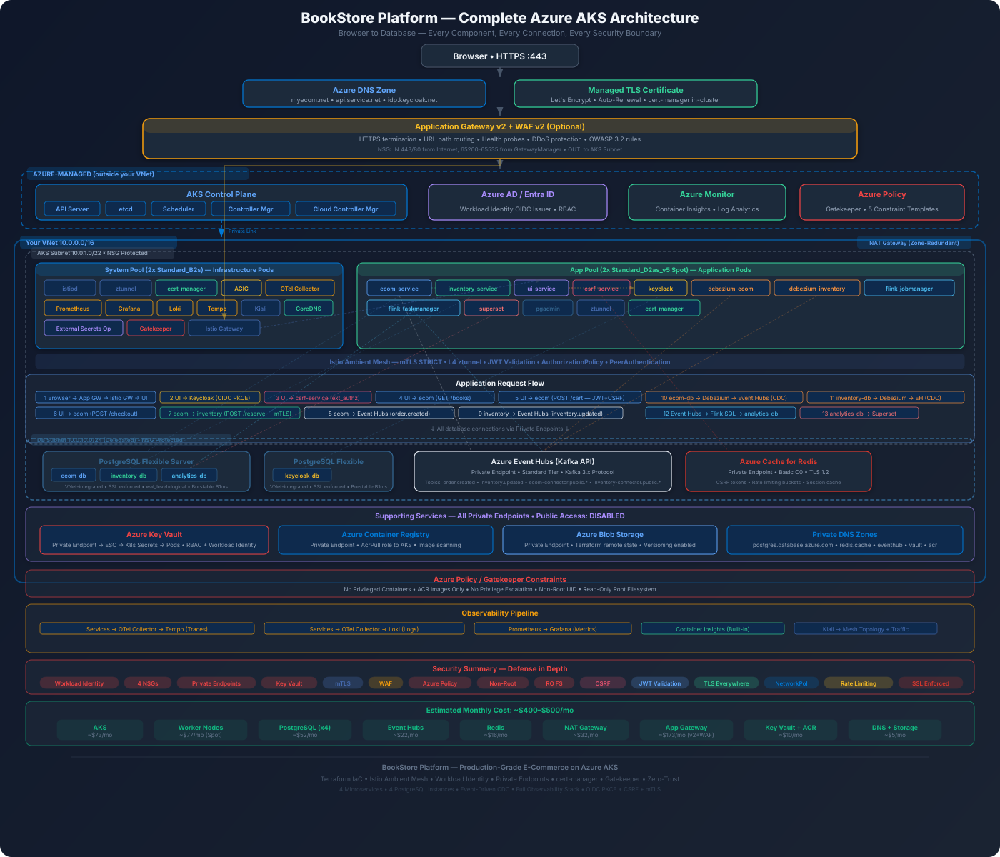

Complete cost-optimized, production-grade deployment guide for a single Availability Zone. Target: $400-500/mo with full security.

A single Availability Zone deployment places all resources in one physical datacenter within an Azure region. This eliminates cross-zone data transfer charges ($0.01/GB), removes the need for zone-redundant PaaS tiers, and allows use of smaller, burstable SKUs.
| Dimension | Single-AZ | Multi-AZ |
|---|---|---|
| AKS SLA | 99.5% | 99.99% |
| Monthly cost | $400-500 | $900-1,200 |
| Zone failure | Full outage (RPO depends on backup) | Auto-failover, minimal downtime |
| Data redundancy | LRS (3 copies, same DC) | ZRS (3 copies, 3 DCs) |
| PaaS HA | Single replica (no standby) | Zone-redundant replicas |
| Cross-zone traffic | $0 | ~$20-50/mo |
| Best for | Dev, staging, startups, learning | Production SLA requirements |
# Login and set subscription
az login
az account set --subscription "YOUR_SUBSCRIPTION_ID"
# Create Service Principal for Terraform
az ad sp create-for-rbac \
--name "bookstore-terraform-sp" \
--role "Contributor" \
--scopes "/subscriptions/YOUR_SUBSCRIPTION_ID" \
--output json
# Export ARM_ variables for Terraform
export ARM_CLIENT_ID="<appId>"
export ARM_CLIENT_SECRET="<password>"
export ARM_SUBSCRIPTION_ID="<subscriptionId>"
export ARM_TENANT_ID="<tenantId>"| Component | Identity Type | Role(s) |
|---|---|---|
| Terraform | Service Principal | Contributor + User Access Administrator |
| AKS Kubelet | Managed Identity | AcrPull on ACR |
| AKS Control Plane | Managed Identity | Network Contributor on VNet |
| External Secrets Operator | Workload Identity | Key Vault Secrets User |
| cert-manager | Workload Identity | DNS Zone Contributor (if using DNS-01) |
| App Gateway | Managed Identity | Key Vault Certificates Officer |
User Access Administrator only because it assigns RBAC roles (e.g., AcrPull to AKS). If you pre-create role assignments manually, Contributor alone suffices. Never assign Owner to automation service principals.
Terraform state contains secrets (database passwords, connection strings). Local state files risk accidental git commits. Azure Blob Storage provides encryption at rest, versioning for rollback, and native lease-based locking to prevent concurrent applies.
# Create state storage (run once, outside Terraform)
az group create -n bookstore-tfstate-rg -l eastus2
az storage account create \
-n bookstoretfstate \
-g bookstore-tfstate-rg \
-l eastus2 \
--sku Standard_LRS \
--min-tls-version TLS1_2 \
--allow-blob-public-access false \
--https-only true
az storage container create \
-n tfstate \
--account-name bookstoretfstateterraform {
backend "azurerm" {
resource_group_name = "bookstore-tfstate-rg"
storage_account_name = "bookstoretfstate"
container_name = "tfstate"
key = "bookstore.single-az.tfstate"
use_oidc = true # or use_cli = true
}
}For a single-AZ deployment, one resource group keeps management simple. All resources share the same lifecycle -- az group delete tears down everything. Tags provide cost attribution without the overhead of multiple RGs.
resource "azurerm_resource_group" "main" {
name = "bookstore-rg"
location = "eastus2"
tags = {
environment = "staging"
project = "bookstore"
team = "platform"
cost-center = "engineering"
managed-by = "terraform"
}
}
# All other resources reference:
# resource_group_name = azurerm_resource_group.main.name
# location = azurerm_resource_group.main.locationeastus2 is typically 5-15% cheaper than westus2 or westeurope for compute. Check Azure Pricing Calculator for your specific SKUs.
Azure CNI assigns a VNet IP to every pod. With 4 nodes and ~30 pods per node, you need ~120+ IPs just for pods, plus node IPs and service IPs. A /22 (1,024 IPs) gives ample headroom for scaling. The database and App Gateway subnets use /24 (256 IPs each), which is more than enough for their respective services.
resource "azurerm_virtual_network" "main" {
name = "bookstore-vnet"
location = azurerm_resource_group.main.location
resource_group_name = azurerm_resource_group.main.name
address_space = ["10.0.0.0/16"]
}
resource "azurerm_subnet" "aks" {
name = "aks-subnet"
resource_group_name = azurerm_resource_group.main.name
virtual_network_name = azurerm_virtual_network.main.name
address_prefixes = ["10.0.0.0/22"]
}
resource "azurerm_subnet" "database" {
name = "database-subnet"
resource_group_name = azurerm_resource_group.main.name
virtual_network_name = azurerm_virtual_network.main.name
address_prefixes = ["10.0.8.0/24"]
delegation {
name = "pg-delegation"
service_delegation {
name = "Microsoft.DBforPostgreSQL/flexibleServers"
actions = [
"Microsoft.Network/virtualNetworks/subnets/join/action"
]
}
}
}
resource "azurerm_subnet" "appgw" {
name = "appgw-subnet"
resource_group_name = azurerm_resource_group.main.name
virtual_network_name = azurerm_virtual_network.main.name
address_prefixes = ["10.0.10.0/24"]
}
# NAT Gateway for deterministic egress IP
resource "azurerm_public_ip" "nat" {
name = "bookstore-nat-pip"
location = azurerm_resource_group.main.location
resource_group_name = azurerm_resource_group.main.name
allocation_method = "Static"
sku = "Standard"
zones = ["1", "2", "3"] # zone-redundant
}
resource "azurerm_nat_gateway" "main" {
name = "bookstore-nat-gw"
location = azurerm_resource_group.main.location
resource_group_name = azurerm_resource_group.main.name
sku_name = "Standard"
}
resource "azurerm_nat_gateway_public_ip_association" "main" {
nat_gateway_id = azurerm_nat_gateway.main.id
public_ip_address_id = azurerm_public_ip.nat.id
}
resource "azurerm_subnet_nat_gateway_association" "aks" {
subnet_id = azurerm_subnet.aks.id
nat_gateway_id = azurerm_nat_gateway.main.id
}| Resource | Monthly Cost |
|---|---|
| VNet | $0 |
| Subnets (3) | $0 |
| NAT Gateway | $26.28 |
| Static Public IP | $3.65 |
| Total | ~$32/mo |
NSGs are Azure's stateful firewall at the subnet level. They cost $0 but are the single most important network security control. Each subnet gets a dedicated NSG with explicit allow rules and a deny-all catch-all.
resource "azurerm_network_security_group" "aks" {
name = "aks-nsg"
location = azurerm_resource_group.main.location
resource_group_name = azurerm_resource_group.main.name
# Allow App Gateway to reach AKS nodes
security_rule {
name = "AllowAppGatewayInbound"
priority = 100
direction = "Inbound"
access = "Allow"
protocol = "Tcp"
source_port_range = "*"
destination_port_ranges = ["80", "443", "30000-32767"]
source_address_prefix = "10.0.10.0/24"
destination_address_prefix = "10.0.0.0/22"
}
# AKS control plane communication
security_rule {
name = "AllowAzureCloudInbound"
priority = 110
direction = "Inbound"
access = "Allow"
protocol = "Tcp"
source_port_range = "*"
destination_port_range = "443"
source_address_prefix = "AzureCloud"
destination_address_prefix = "10.0.0.0/22"
}
# Pod-to-pod and node-to-node within AKS
security_rule {
name = "AllowIntraSubnet"
priority = 120
direction = "Inbound"
access = "Allow"
protocol = "*"
source_port_range = "*"
destination_port_range = "*"
source_address_prefix = "10.0.0.0/22"
destination_address_prefix = "10.0.0.0/22"
}
# Azure Load Balancer health probes
security_rule {
name = "AllowAzureLBProbes"
priority = 130
direction = "Inbound"
access = "Allow"
protocol = "*"
source_port_range = "*"
destination_port_range = "*"
source_address_prefix = "AzureLoadBalancer"
destination_address_prefix = "10.0.0.0/22"
}
# Deny everything else
security_rule {
name = "DenyAllInbound"
priority = 4000
direction = "Inbound"
access = "Deny"
protocol = "*"
source_port_range = "*"
destination_port_range = "*"
source_address_prefix = "*"
destination_address_prefix = "*"
}
}
resource "azurerm_subnet_network_security_group_association" "aks" {
subnet_id = azurerm_subnet.aks.id
network_security_group_id = azurerm_network_security_group.aks.id
}AllowVNetInBound rule (priority 65000) allows any resource in 10.0.0.0/16 to reach AKS nodes on any port.
resource "azurerm_network_security_group" "database" {
name = "database-nsg"
location = azurerm_resource_group.main.location
resource_group_name = azurerm_resource_group.main.name
# Only AKS pods can reach PostgreSQL
security_rule {
name = "AllowAKSToPostgres"
priority = 100
direction = "Inbound"
access = "Allow"
protocol = "Tcp"
source_port_range = "*"
destination_port_range = "5432"
source_address_prefix = "10.0.0.0/22"
destination_address_prefix = "10.0.8.0/24"
}
security_rule {
name = "DenyAllInbound"
priority = 4000
direction = "Inbound"
access = "Deny"
protocol = "*"
source_port_range = "*"
destination_port_range = "*"
source_address_prefix = "*"
destination_address_prefix = "*"
}
}
resource "azurerm_subnet_network_security_group_association" "database" {
subnet_id = azurerm_subnet.database.id
network_security_group_id = azurerm_network_security_group.database.id
}resource "azurerm_network_security_group" "appgw" {
name = "appgw-nsg"
location = azurerm_resource_group.main.location
resource_group_name = azurerm_resource_group.main.name
# Public HTTPS/HTTP ingress
security_rule {
name = "AllowHTTPSInternet"
priority = 100
direction = "Inbound"
access = "Allow"
protocol = "Tcp"
source_port_range = "*"
destination_port_ranges = ["80", "443"]
source_address_prefix = "Internet"
destination_address_prefix = "10.0.10.0/24"
}
# REQUIRED: App Gateway v2 health probes
security_rule {
name = "AllowGatewayManager"
priority = 110
direction = "Inbound"
access = "Allow"
protocol = "Tcp"
source_port_range = "*"
destination_port_range = "65200-65535"
source_address_prefix = "GatewayManager"
destination_address_prefix = "*"
}
security_rule {
name = "AllowAzureLBProbes"
priority = 120
direction = "Inbound"
access = "Allow"
protocol = "*"
source_port_range = "*"
destination_port_range = "*"
source_address_prefix = "AzureLoadBalancer"
destination_address_prefix = "*"
}
security_rule {
name = "DenyAllInbound"
priority = 4000
direction = "Inbound"
access = "Deny"
protocol = "*"
source_port_range = "*"
destination_port_range = "*"
source_address_prefix = "*"
destination_address_prefix = "*"
}
}
resource "azurerm_subnet_network_security_group_association" "appgw" {
subnet_id = azurerm_subnet.appgw.id
network_security_group_id = azurerm_network_security_group.appgw.id
}GatewayManager rule on ports 65200-65535 is mandatory. Without it, Azure cannot probe the App Gateway health and the gateway enters a failed state. This is the #1 misconfiguration for new App Gateway deployments.
Private Endpoints place a private IP inside your VNet for Azure PaaS services. Traffic never leaves the Azure backbone -- no public internet exposure. Each Private Endpoint costs ~$7.30/mo.
resource "azurerm_private_endpoint" "redis" {
name = "bookstore-redis-pe"
location = azurerm_resource_group.main.location
resource_group_name = azurerm_resource_group.main.name
subnet_id = azurerm_subnet.aks.id
private_service_connection {
name = "redis-psc"
private_connection_resource_id = azurerm_redis_cache.main.id
is_manual_connection = false
subresource_names = ["redisCache"]
}
private_dns_zone_group {
name = "redis-dns"
private_dns_zone_ids = [azurerm_private_dns_zone.redis.id]
}
}
resource "azurerm_private_dns_zone" "redis" {
name = "privatelink.redis.cache.windows.net"
resource_group_name = azurerm_resource_group.main.name
}
resource "azurerm_private_dns_zone_virtual_network_link" "redis" {
name = "redis-vnet-link"
resource_group_name = azurerm_resource_group.main.name
private_dns_zone_name = azurerm_private_dns_zone.redis.name
virtual_network_id = azurerm_virtual_network.main.id
}| Service | Subresource | DNS Zone | Cost |
|---|---|---|---|
| Redis | redisCache | privatelink.redis.cache.windows.net | $7.30 |
| Event Hubs | namespace | privatelink.servicebus.windows.net | $7.30 |
| Key Vault | vault | privatelink.vaultcore.azure.net | $7.30 |
| ACR | registry | privatelink.azurecr.io | $7.30 |
| Blob Storage | blob | privatelink.blob.core.windows.net | $7.30 |
| PostgreSQL | VNet delegation (not PE -- included in server cost) | $0 | |
| Total | ~$36.50 | ||
The Free tier has no SLA and limits to 10 nodes. Standard tier ($73/mo) provides a 99.5% uptime SLA (single-AZ), financially-backed. For the 99.95% SLA, you need Premium tier ($290/mo) -- overkill for single-AZ since your nodes are in one zone anyway.
resource "azurerm_kubernetes_cluster" "main" {
name = "bookstore-aks"
location = azurerm_resource_group.main.location
resource_group_name = azurerm_resource_group.main.name
dns_prefix = "bookstore"
kubernetes_version = "1.30"
sku_tier = "Standard" # $73/mo for SLA
# Workload Identity for pod-level IAM
oidc_issuer_enabled = true
workload_identity_enabled = true
# Azure CNI for VNet-native pod IPs
network_profile {
network_plugin = "azure"
network_policy = "calico" # or "azure" for Azure NPM
service_cidr = "172.16.0.0/16"
dns_service_ip = "172.16.0.10"
}
# System node pool (defined inline)
default_node_pool {
name = "system"
node_count = 2
vm_size = "Standard_B2s"
vnet_subnet_id = azurerm_subnet.aks.id
zones = ["1"] # Single AZ
os_disk_size_gb = 30
os_disk_type = "Ephemeral"
temporary_name_for_rotation = "systemtmp"
upgrade_settings {
max_surge = "1"
}
}
identity {
type = "SystemAssigned"
}
# Security features
azure_policy_enabled = true
key_vault_secrets_provider {
secret_rotation_enabled = true
secret_rotation_interval = "2m"
}
auto_scaler_profile {
scale_down_delay_after_add = "5m"
scale_down_unneeded = "5m"
}
tags = azurerm_resource_group.main.tags
}System pool runs kube-system, CoreDNS, and Istio components. These must be on reliable, always-on nodes. Burstable B2s handles this at minimal cost. App pool runs your application pods on Spot instances at 60-90% discount. If Azure reclaims a Spot node, Kubernetes reschedules pods to surviving nodes within seconds.
# App node pool -- Spot instances with AMD CPUs
resource "azurerm_kubernetes_cluster_node_pool" "app" {
name = "app"
kubernetes_cluster_id = azurerm_kubernetes_cluster.main.id
vm_size = "Standard_D2as_v5"
node_count = 2
zones = ["1"]
vnet_subnet_id = azurerm_subnet.aks.id
os_disk_size_gb = 30
os_disk_type = "Ephemeral"
# Spot configuration
priority = "Spot"
eviction_policy = "Delete"
spot_max_price = -1 # Pay current spot price
node_labels = {
"kubernetes.azure.com/scalesetpriority" = "spot"
"workload-type" = "app"
}
node_taints = [
"kubernetes.azure.com/scalesetpriority=spot:NoSchedule"
]
}| Configuration | Nodes | Monthly Cost |
|---|---|---|
| Over-provisioned (5x D4s_v3 On-Demand) | 5 | $720/mo |
| Moderate (3x D2s_v3 On-Demand) | 3 | $216/mo |
| This guide (2x B2s + 2x D2as Spot) | 4 | $77/mo |
Savings: $643/mo (89%) vs over-provisioned
tolerations for the spot taint and podDisruptionBudgets to ensure at least 1 replica survives eviction. System pool has no taints -- critical add-ons always have a home.
Basic SKU ($5/mo, 10GB storage) is sufficient for single-AZ with a handful of microservice images. Standard ($20/mo) adds geo-replication and webhooks. Premium ($50/mo) adds Private Endpoint support -- only needed if you require the registry to be entirely private.
resource "azurerm_container_registry" "main" {
name = "bookstoreacr"
resource_group_name = azurerm_resource_group.main.name
location = azurerm_resource_group.main.location
sku = "Basic"
admin_enabled = false # Use managed identity, not admin creds
}
# Grant AKS kubelet identity permission to pull images
resource "azurerm_role_assignment" "aks_acr_pull" {
scope = azurerm_container_registry.main.id
role_definition_name = "AcrPull"
principal_id = azurerm_kubernetes_cluster.main.kubelet_identity[0].object_id
}For dev/staging workloads, databases are mostly idle. Burstable SKUs accumulate CPU credits during idle time and burst when needed. B1ms provides 1 vCPU and 2GB RAM -- sufficient for microservice databases with moderate query loads. General Purpose D2s ($136/mo each) is 10x the cost for capacity you will not use.
# Reusable module for all 4 databases
resource "azurerm_postgresql_flexible_server" "ecom" {
name = "bookstore-ecom-db"
resource_group_name = azurerm_resource_group.main.name
location = azurerm_resource_group.main.location
version = "16"
delegated_subnet_id = azurerm_subnet.database.id
private_dns_zone_id = azurerm_private_dns_zone.postgres.id
public_network_access_enabled = false
zone = "1"
# Burstable for cost savings
sku_name = "B_Standard_B1ms"
storage_mb = 32768
# No HA for single-AZ (saves ~$13/mo per server)
# high_availability { mode = "ZoneRedundant" } # OMITTED
authentication {
password_auth_enabled = true
active_directory_auth_enabled = false
}
}
# Enable logical replication for Debezium CDC
resource "azurerm_postgresql_flexible_server_configuration" "ecom_wal" {
server_id = azurerm_postgresql_flexible_server.ecom.id
name = "wal_level"
value = "logical"
}
# Repeat for: inventory-db, analytics-db, keycloak-db
resource "azurerm_private_dns_zone" "postgres" {
name = "bookstore.postgres.database.azure.com"
resource_group_name = azurerm_resource_group.main.name
}
resource "azurerm_private_dns_zone_virtual_network_link" "postgres" {
name = "postgres-vnet-link"
resource_group_name = azurerm_resource_group.main.name
private_dns_zone_name = azurerm_private_dns_zone.postgres.name
virtual_network_id = azurerm_virtual_network.main.id
}| Configuration | Per Server | 4 Servers |
|---|---|---|
| GP D2s + HA (Zone Redundant) | $272 | $1,088/mo |
| GP D2s (No HA) | $136 | $544/mo |
| Burstable B1ms (No HA) | $13.14 | $52.56/mo |
Savings: $992/mo (91%) vs GP with HA
SameZone HA mode, which adds a standby replica in the same zone (~$13/mo extra per server).
Running Kafka on AKS requires 3 broker nodes + 3 ZooKeeper nodes (or KRaft) -- that is 6 pods consuming significant compute. Event Hubs provides a Kafka-compatible endpoint as a managed service. Your producers and consumers use the standard Kafka protocol (bootstrap servers, SASL auth) with zero operational burden.
resource "azurerm_eventhub_namespace" "main" {
name = "bookstore-eventhubs"
resource_group_name = azurerm_resource_group.main.name
location = azurerm_resource_group.main.location
sku = "Standard"
capacity = 1 # 1 Throughput Unit
auto_inflate_enabled = true
maximum_throughput_units = 3
public_network_access_enabled = false
minimum_tls_version = "1.2"
kafka_enabled = true # Kafka protocol support
}
resource "azurerm_eventhub" "order_created" {
name = "order.created"
namespace_name = azurerm_eventhub_namespace.main.name
resource_group_name = azurerm_resource_group.main.name
partition_count = 4
message_retention = 7 # days
}
resource "azurerm_eventhub" "inventory_updated" {
name = "inventory.updated"
namespace_name = azurerm_eventhub_namespace.main.name
resource_group_name = azurerm_resource_group.main.name
partition_count = 4
message_retention = 7
}
# Consumer group for each service
resource "azurerm_eventhub_consumer_group" "inventory_consumer" {
name = "inventory-service"
namespace_name = azurerm_eventhub_namespace.main.name
eventhub_name = azurerm_eventhub.order_created.name
resource_group_name = azurerm_resource_group.main.name
}| Option | Monthly Cost |
|---|---|
| Event Hubs Premium (1 PU) | $1,462 |
| Self-managed Kafka (3 brokers on D2s) | $216+ |
| Event Hubs Standard (1 TU) | $22 |
For single-AZ, there is no need for replication (Standard C0 adds a replica for $32/mo). Basic C0 provides 250MB and 256 connections -- sufficient for session storage, CSRF tokens, and rate limiting for a bookstore. If the Redis instance restarts, sessions are temporarily lost (users re-authenticate) -- acceptable for dev/staging.
resource "azurerm_redis_cache" "main" {
name = "bookstore-redis"
resource_group_name = azurerm_resource_group.main.name
location = azurerm_resource_group.main.location
capacity = 0
family = "C"
sku_name = "Basic"
minimum_tls_version = "1.2"
public_network_access_enabled = false
redis_version = "6"
redis_configuration {
maxmemory_policy = "allkeys-lru"
}
}| SKU | Replication | Monthly Cost |
|---|---|---|
| Premium P1 (6GB, cluster) | Yes + clustering | $224 |
| Standard C0 (250MB) | Yes (1 replica) | $32 |
| Basic C0 (250MB) | No | $16 |
Access Policies are a legacy authorization model specific to Key Vault. RBAC uses the same Azure role assignment model as every other Azure service -- consistent, auditable via Azure Activity Log, and supports conditions (e.g., restrict to specific secret names). Microsoft recommends RBAC for all new Key Vaults.
resource "azurerm_key_vault" "main" {
name = "bookstore-kv"
resource_group_name = azurerm_resource_group.main.name
location = azurerm_resource_group.main.location
sku_name = "standard"
tenant_id = data.azurerm_client_config.current.tenant_id
enable_rbac_authorization = true
soft_delete_retention_days = 7
purge_protection_enabled = true
public_network_access_enabled = false
}
# Grant ESO workload identity access to secrets
resource "azurerm_role_assignment" "eso_secrets" {
scope = azurerm_key_vault.main.id
role_definition_name = "Key Vault Secrets User"
principal_id = azurerm_user_assigned_identity.eso.principal_id
}
# Store database passwords
resource "azurerm_key_vault_secret" "ecom_db_password" {
name = "ecom-db-password"
value = random_password.ecom_db.result
key_vault_id = azurerm_key_vault.main.id
}
# Repeat for all service secretsExternalSecret CRDs. When you create one pointing to ecom-db-password in Key Vault, ESO authenticates via Workload Identity, fetches the secret, and creates a native Kubernetes Secret. Your pods use standard secretKeyRef -- they never know about Key Vault.
Standard_v2 handles TLS termination, URL routing, and health probes. WAF_v2 adds OWASP 3.2 rule sets, bot protection, and geo-filtering -- essential for internet-facing production, but $175/mo extra. For dev/staging or when Istio's AuthorizationPolicy provides sufficient L7 protection, Standard_v2 is appropriate.
resource "azurerm_application_gateway" "main" {
name = "bookstore-appgw"
resource_group_name = azurerm_resource_group.main.name
location = azurerm_resource_group.main.location
sku {
name = "Standard_v2" # WAF_v2 for production
tier = "Standard_v2"
capacity = 1 # Fixed capacity (no autoscale)
}
gateway_ip_configuration {
name = "appgw-ip-config"
subnet_id = azurerm_subnet.appgw.id
}
frontend_ip_configuration {
name = "appgw-feip"
public_ip_address_id = azurerm_public_ip.appgw.id
}
frontend_port {
name = "https"
port = 443
}
frontend_port {
name = "http"
port = 80
}
# HTTPS listener
http_listener {
name = "https-listener"
frontend_ip_configuration_name = "appgw-feip"
frontend_port_name = "https"
protocol = "Https"
ssl_certificate_name = "bookstore-cert"
}
# HTTP-to-HTTPS redirect
http_listener {
name = "http-listener"
frontend_ip_configuration_name = "appgw-feip"
frontend_port_name = "http"
protocol = "Http"
}
redirect_configuration {
name = "http-to-https"
redirect_type = "Permanent"
target_listener_name = "https-listener"
include_path = true
include_query_string = true
}
request_routing_rule {
name = "http-redirect"
priority = 100
rule_type = "Basic"
http_listener_name = "http-listener"
redirect_configuration_name = "http-to-https"
}
# URL path map for service routing
url_path_map {
name = "bookstore-paths"
default_backend_address_pool_name = "ui-pool"
default_backend_http_settings_name = "ui-settings"
path_rule {
name = "ecom-api"
paths = ["/ecom/*"]
backend_address_pool_name = "ecom-pool"
backend_http_settings_name = "api-settings"
}
path_rule {
name = "inventory-api"
paths = ["/inven/*"]
backend_address_pool_name = "inventory-pool"
backend_http_settings_name = "api-settings"
}
}
# ... backend pools, HTTP settings, probes omitted for brevity
}capacity = 1 (fixed) instead of autoscale for single-AZ. Autoscale minimum is 2 instances, doubling the cost. One instance handles ~100 concurrent connections easily for dev/staging workloads.
resource "azurerm_dns_zone" "main" {
name = "bookstore.dev"
resource_group_name = azurerm_resource_group.main.name
}
resource "azurerm_dns_a_record" "app" {
name = "app"
zone_name = azurerm_dns_zone.main.name
resource_group_name = azurerm_resource_group.main.name
ttl = 300
target_resource_id = azurerm_public_ip.appgw.id
}
resource "azurerm_dns_a_record" "api" {
name = "api"
zone_name = azurerm_dns_zone.main.name
resource_group_name = azurerm_resource_group.main.name
ttl = 300
target_resource_id = azurerm_public_ip.appgw.id
}
resource "azurerm_dns_a_record" "idp" {
name = "idp"
zone_name = azurerm_dns_zone.main.name
resource_group_name = azurerm_resource_group.main.name
ttl = 300
target_resource_id = azurerm_public_ip.appgw.id
}Azure Policy installs Gatekeeper (OPA) as an admission controller in your cluster. Every kubectl apply is intercepted and evaluated against your policies. Non-compliant resources are rejected before they are created -- not after. This is preventive, not detective.
# 1. No privileged containers
resource "azurerm_resource_policy_assignment" "no_privileged" {
name = "no-privileged-containers"
resource_id = azurerm_kubernetes_cluster.main.id
policy_definition_id = "/providers/Microsoft.Authorization/policyDefinitions/95edb821-ddaf-4404-9732-666045e056b4"
enforce = true
}
# 2. Container images only from ACR
resource "azurerm_resource_policy_assignment" "acr_only" {
name = "allowed-container-registries"
resource_id = azurerm_kubernetes_cluster.main.id
policy_definition_id = "/providers/Microsoft.Authorization/policyDefinitions/febd0533-8e55-448f-b837-bd0e06f16469"
enforce = true
parameters = jsonencode({
allowedContainerImagesRegex = {
value = "^bookstoreacr\\.azurecr\\.io/.+$"
}
})
}
# 3. No privilege escalation
resource "azurerm_resource_policy_assignment" "no_priv_esc" {
name = "no-privilege-escalation"
resource_id = azurerm_kubernetes_cluster.main.id
policy_definition_id = "/providers/Microsoft.Authorization/policyDefinitions/1c6e92c9-99f0-4e55-9cf2-0c234dc48f99"
enforce = true
}
# 4. Must run as non-root
resource "azurerm_resource_policy_assignment" "non_root" {
name = "must-run-as-non-root"
resource_id = azurerm_kubernetes_cluster.main.id
policy_definition_id = "/providers/Microsoft.Authorization/policyDefinitions/098fc59e-46c7-4d99-9b16-64990e543d75"
enforce = true
}
# 5. Read-only root filesystem
resource "azurerm_resource_policy_assignment" "readonly_rootfs" {
name = "readonly-root-filesystem"
resource_id = azurerm_kubernetes_cluster.main.id
policy_definition_id = "/providers/Microsoft.Authorization/policyDefinitions/df49d893-a74c-421d-bc95-c663042e5b80"
enforce = true
}enforce = false initially to see which existing pods would violate policies (check Azure Policy compliance dashboard). Once clean, flip to enforce = true.
Ambient mesh uses a per-node ztunnel DaemonSet instead of per-pod sidecar proxies. This saves ~100MB RAM per pod (5 services x 2 replicas = 1GB saved). mTLS is automatic -- every pod gets a SPIFFE identity and all traffic is encrypted without application changes.
# Install Istio with ambient profile
istioctl install --set profile=ambient \
--set values.global.meshID=bookstore \
--set values.global.network=main \
-y
# Label namespaces for ambient mesh enrollment
kubectl label namespace ecom istio.io/dataplane-mode=ambient
kubectl label namespace inventory istio.io/dataplane-mode=ambient
# PeerAuthentication: STRICT mTLS per namespace
apiVersion: security.istio.io/v1
kind: PeerAuthentication
metadata:
name: default
namespace: ecom
spec:
mtls:
mode: STRICT
# AuthorizationPolicy: deny-all + explicit allows
apiVersion: security.istio.io/v1
kind: AuthorizationPolicy
metadata:
name: allow-ecom-to-inventory
namespace: inventory
spec:
action: ALLOW
rules:
- from:
- source:
principals: ["cluster.local/ns/ecom/sa/ecom-sa"]
to:
- operation:
methods: ["GET", "POST"]
paths: ["/inven/*"]STRICT mTLS and a default-deny AuthorizationPolicy, even if an attacker gains shell access in a compromised pod, they cannot reach any other service without a valid SPIFFE certificate. Lateral movement is blocked at the network level.
apiVersion: apps/v1
kind: Deployment
metadata:
name: ecom-service
namespace: ecom
spec:
replicas: 2
selector:
matchLabels:
app: ecom-service
template:
metadata:
labels:
app: ecom-service
spec:
serviceAccountName: ecom-sa
# Tolerate spot node taint
tolerations:
- key: "kubernetes.azure.com/scalesetpriority"
operator: "Equal"
value: "spot"
effect: "NoSchedule"
# Prefer app pool
affinity:
nodeAffinity:
preferredDuringSchedulingIgnoredDuringExecution:
- weight: 1
preference:
matchExpressions:
- key: workload-type
operator: In
values: ["app"]
# Init container for migrations
initContainers:
- name: migrate
image: bookstoreacr.azurecr.io/ecom-service:latest
command: ["java", "-jar", "app.jar", "--migrate"]
env:
- name: DATABASE_URL
valueFrom:
secretKeyRef:
name: ecom-db-credentials
key: jdbc-url
securityContext:
runAsNonRoot: true
runAsUser: 1000
readOnlyRootFilesystem: true
allowPrivilegeEscalation: false
capabilities:
drop: ["ALL"]
containers:
- name: ecom-service
image: bookstoreacr.azurecr.io/ecom-service:latest
ports:
- containerPort: 8080
env:
- name: DATABASE_URL
valueFrom:
secretKeyRef:
name: ecom-db-credentials
key: jdbc-url
- name: KEYCLOAK_JWKS_URI
value: "http://keycloak.identity.svc:8080/..."
resources:
requests:
cpu: 250m
memory: 512Mi
limits:
cpu: 500m
memory: 768Mi
securityContext:
runAsNonRoot: true
runAsUser: 1000
readOnlyRootFilesystem: true
allowPrivilegeEscalation: false
capabilities:
drop: ["ALL"]
livenessProbe:
httpGet:
path: /ecom/actuator/health
port: 8080
initialDelaySeconds: 30
readinessProbe:
httpGet:
path: /ecom/actuator/health/readiness
port: 8080
initialDelaySeconds: 10minAvailable: 1. This ensures Kubernetes never evicts both replicas simultaneously during Spot eviction or node upgrades.
Azure Monitor (Container Insights) costs ~$2.76/GB of ingested logs. For a bookstore generating 5-10GB/month of logs, that is $14-28/mo. Self-hosted Prometheus + Loki + Tempo on AKS costs $0 beyond the node resources they consume. Since we already have spare capacity on the app pool, self-hosted is the cost-optimal choice.
| Component | CPU Request | Memory Request |
|---|---|---|
| Prometheus | 100m | 256Mi |
| Grafana | 100m | 128Mi |
| Loki | 100m | 256Mi |
| Tempo | 100m | 256Mi |
| OTel Collector | 100m | 128Mi |
| Total | 500m | 1,024Mi |
| Component | SKU / Tier | Monthly Cost |
|---|---|---|
| VNet + Subnets | - | $0 |
| NAT Gateway + Public IP | Standard | $32 |
| NSGs (3) | - | $0 |
| Private Endpoints (5) | - | $36.50 |
| AKS Control Plane | Standard tier | $73 |
| System Pool (2x B2s) | Burstable | $60.74 |
| App Pool (2x D2as_v5 Spot) | Spot | $17.40 |
| ACR | Basic | $5 |
| PostgreSQL (4x B1ms) | Burstable, no HA | $52.56 |
| Event Hubs (1 TU Standard) | Standard | $22 |
| Azure Cache for Redis | Basic C0 | $16 |
| Key Vault | Standard | $0.50 |
| Application Gateway | Standard_v2 | $173 |
| Azure DNS | - | $0.50 |
| Azure Policy | - | $0 |
| Istio Ambient Mesh | Open source | $0 |
| Observability (self-hosted) | - | $0 |
| Terraform State (Blob) | LRS | $1 |
| TOTAL (This Guide) | ~$490/mo |
| Configuration | Monthly Cost | Savings |
|---|---|---|
| Over-provisioned (GP VMs, Premium PaaS, HA everywhere) | ~$4,200/mo | - |
| Optimized Multi-AZ (Zone-redundant, right-sized) | ~$900/mo | 79% vs over-provisioned |
| This Guide (Single-AZ, cost-optimized) | ~$490/mo | 88% vs over-provisioned |
# 1. Login and set subscription
az login
az account set --subscription "YOUR_SUB_ID"
# 2. Create Terraform state backend
az group create -n bookstore-tfstate-rg -l eastus2
az storage account create -n bookstoretfstate -g bookstore-tfstate-rg \
-l eastus2 --sku Standard_LRS --min-tls-version TLS1_2 \
--allow-blob-public-access false --https-only true
az storage container create -n tfstate --account-name bookstoretfstate
# 3. Create Service Principal
az ad sp create-for-rbac --name "bookstore-tf-sp" \
--role "Contributor" --scopes "/subscriptions/YOUR_SUB_ID"
# 4. Export credentials
export ARM_CLIENT_ID="..."
export ARM_CLIENT_SECRET="..."
export ARM_SUBSCRIPTION_ID="..."
export ARM_TENANT_ID="..."# 5. Initialize and plan
cd terraform/
terraform init
terraform plan -out=tfplan
# 6. Apply infrastructure (takes ~15-20 minutes)
terraform apply tfplan
# 7. Get AKS credentials
az aks get-credentials \
--resource-group bookstore-rg \
--name bookstore-aks \
--overwrite-existing# 8. Install Istio ambient mesh
istioctl install --set profile=ambient -y
# 9. Install External Secrets Operator
helm repo add external-secrets https://charts.external-secrets.io
helm install external-secrets external-secrets/external-secrets \
-n external-secrets --create-namespace
# 10. Apply Istio security policies
kubectl apply -f k8s/istio/
# 11. Create namespaces and label for ambient mesh
kubectl create namespace ecom
kubectl create namespace inventory
kubectl create namespace identity
kubectl create namespace infra
kubectl label namespace ecom istio.io/dataplane-mode=ambient
kubectl label namespace inventory istio.io/dataplane-mode=ambient# 12. Build and push images to ACR
az acr login --name bookstoreacr
docker build -t bookstoreacr.azurecr.io/ecom-service:latest ./ecom-service
docker build -t bookstoreacr.azurecr.io/inventory-service:latest ./inventory-service
docker build -t bookstoreacr.azurecr.io/ui-service:latest ./ui
docker push bookstoreacr.azurecr.io/ecom-service:latest
docker push bookstoreacr.azurecr.io/inventory-service:latest
docker push bookstoreacr.azurecr.io/ui-service:latest
# 13. Deploy ExternalSecrets, then services
kubectl apply -f k8s/secrets/
kubectl apply -f k8s/services/
# 14. Verify
kubectl get pods -A
curl -sk https://app.bookstore.dev/
curl -sk https://api.bookstore.dev/ecom/booksUse this checklist before going live. Each item maps to a specific Terraform resource or Kubernetes manifest in this guide.
Network Security
public_network_access_enabled = falseIdentity & Access
Kubernetes Security
Service Mesh
Data Protection
ssl_enforcement_enabled = true)TLS & Ingress
Cost Controls
Operational Readiness
The migration is incremental -- each change can be applied independently. No data migration required for any of these changes.
# 1. AKS node pools: spread across zones
# CHANGE: zones = ["1"] -> zones = ["1", "2", "3"]
resource "azurerm_kubernetes_cluster" "main" {
default_node_pool {
zones = ["1", "2", "3"] # was ["1"]
}
}
resource "azurerm_kubernetes_cluster_node_pool" "app" {
zones = ["1", "2", "3"] # was ["1"]
}
# Cost impact: ~$0 (same VMs, just spread across zones)
# Cross-zone traffic: ~$20-50/mo for inter-zone pod communication
# 2. PostgreSQL: enable Zone-Redundant HA
resource "azurerm_postgresql_flexible_server" "ecom" {
high_availability {
mode = "ZoneRedundant"
standby_availability_zone = "2"
}
}
# Cost impact: +$13/mo per server (doubles compute) = +$52/mo for 4
# 3. Redis: upgrade to Standard C0 (replication)
resource "azurerm_redis_cache" "main" {
sku_name = "Standard" # was "Basic"
zones = ["1", "2"]
}
# Cost impact: +$16/mo ($32 total)
# 4. AKS tier: upgrade for better SLA
resource "azurerm_kubernetes_cluster" "main" {
sku_tier = "Premium" # was "Standard" -- 99.95% SLA
}
# Cost impact: +$217/mo ($290 total)
# 5. Storage: upgrade to ZRS for cross-zone durability
# LRS -> ZRS for Terraform state + any PVC-backed storage
# Cost impact: ~$0.005/GB/mo difference
# 6. Optional: App Gateway WAF_v2
resource "azurerm_application_gateway" "main" {
sku {
name = "WAF_v2" # was "Standard_v2"
tier = "WAF_v2"
}
}
# Cost impact: +$175/mo| Change | Additional Monthly Cost |
|---|---|
| Node pools across 3 zones | ~$30 (cross-zone traffic) |
| PostgreSQL Zone-Redundant HA (x4) | +$52 |
| Redis Standard (replicated) | +$16 |
| AKS Premium tier | +$217 |
| Cross-zone data transfer | ~$20-50 |
| WAF (optional) | +$175 |
| Total Multi-AZ Premium | +$510-$540/mo |
| New total (Multi-AZ) | ~$1,000-$1,030/mo |